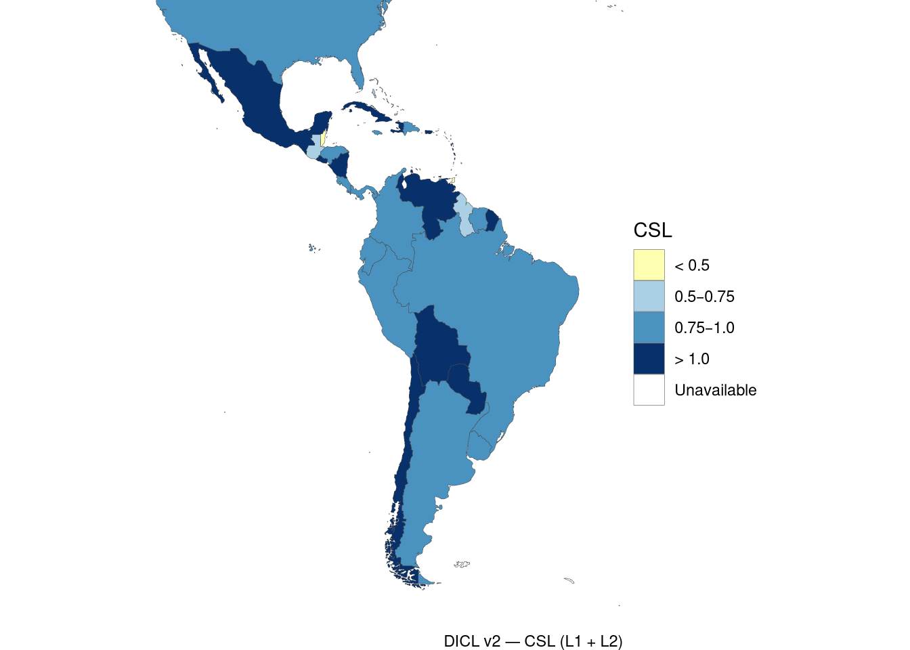
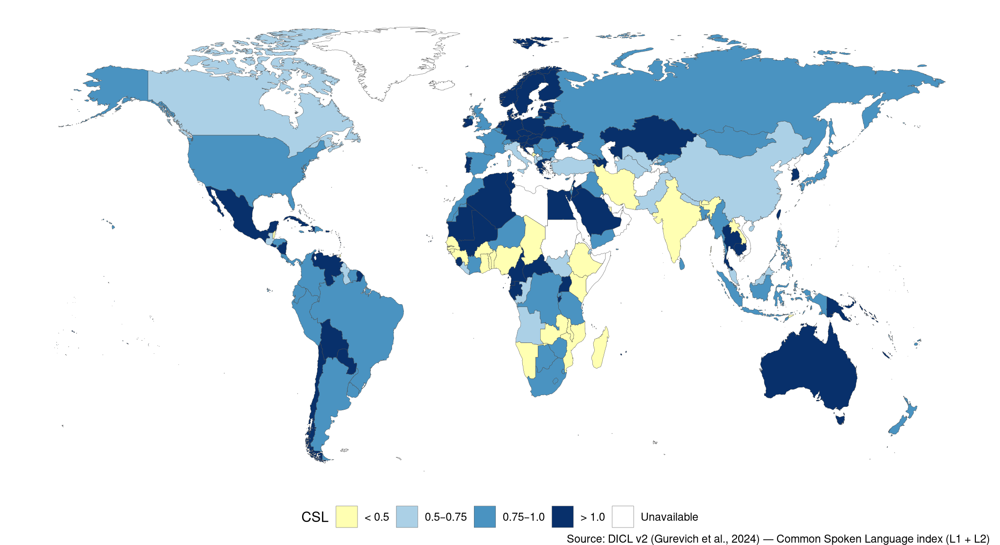
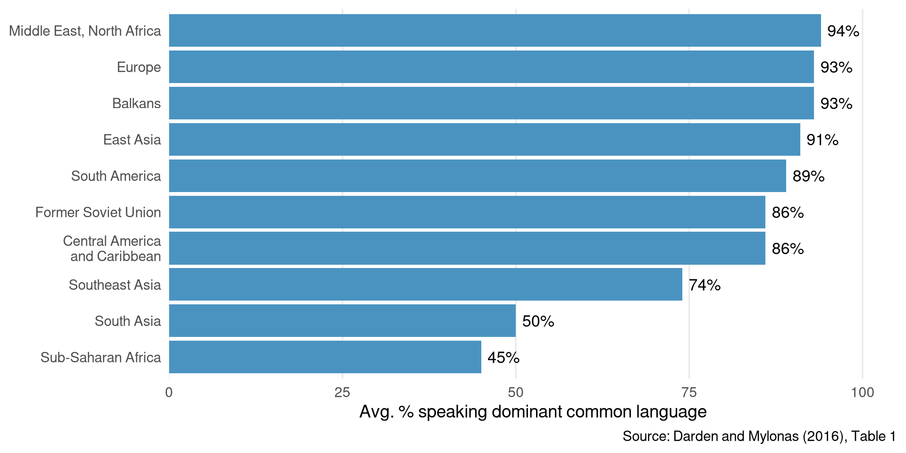
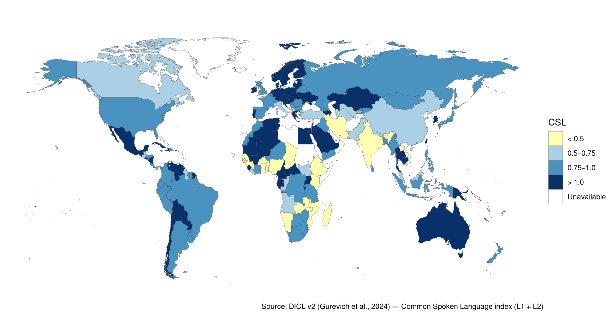
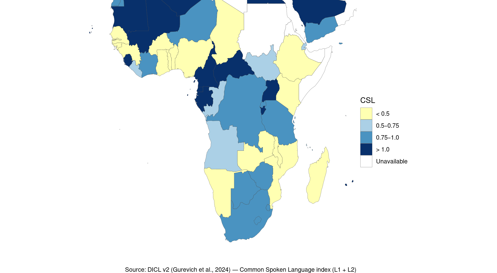
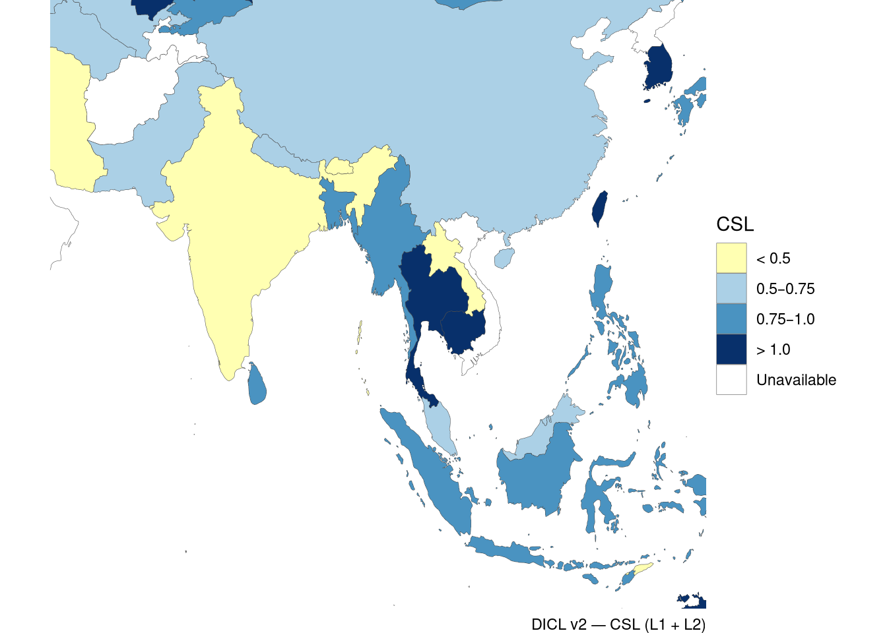

PSCI 2227: War and State Development
April 1, 2026
Last time. Nation-building through war (Sambanis, Skaperdas, Wohlforth).
Today. Darden and Mylonas, “Threats to Territorial Integrity, National Mass Schooling, and Linguistic Commonality.”
Impossible to measure “nationalism” directly
Shared language is a reasonable (though imperfect) proxy for social scientists
Basic logic of focusing on language:

Initial diversity. Does linguistic diversity now just reflect the linguistic diversity of the past?
Duration of rule. Do you just need the same regime in place for a long time to produce linguistic commonality?
State capacity. Do you need the state to have high extractive capacity in the first place to have a national language?
Initial diversity.
Duration of rule.
State capacity.
Darden and Mylonas: linguistic commonality results in part from deliberate decisions by states — nation-building through national schooling
Puzzle from the SSW perspective: why wouldn’t every state do this?
Key insights:
Discussion question
We’ve seen two accounts of how a state can build nationalism:
What other mechanisms could the state use to build national sentiment? When would they be preferable to these?
High external threat \(\rightarrow\) mass national schooling \(\rightarrow\) greater linguistic commonality
Low external threat \(\rightarrow\) no incentive to nation-build \(\rightarrow\) lower linguistic commonality


High commonality where there was high interstate competition (Europe, East Asia); low where borders were externally guaranteed (Sub-Saharan Africa)

The D&M explanation:
Without external threats, no strong incentive to nation-build
Indonesia at independence (1949):
Not an obvious candidate for linguistic homogenization — yet it happened
(a) Threat of military conquest
(b) Threat of externally supported secession
Indonesia pursued nation-building through schools
Results:

What explains the variation within Southeast Asia? Is it really related to external threats?
Why is Latin America uniformly high?

(c) D&M seem to hold their “alternative explanations” to a higher evidentiary standard than their own theory
Their argument structure:
Reminder: No lectures next week (Apr 6–8). Final paper consultations instead.
https://calendly.com/brenton-kenkel/wasd-paper-consultations
Monday, Apr 13. Read Brewer, The Sinews of Power.